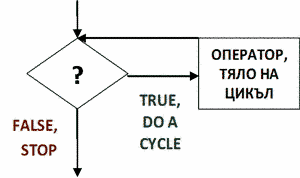

// Да се отпечатат в обратен ред цифрите на n
#include <iostream>
using namespace std ;
main ()
{
int n, lastDigit ;
cin >>n ;
n = (n<0) ? -n : n ;
lastDigit = n % 10 ;
while (n = n/10) // изтрита е последната цифра на n
{ // обработват се числа с повече от една цифра
cout <<lastDigit ;
lastDigit = n % 10 ;
}
cout <<lastDigit ;
}
|

|